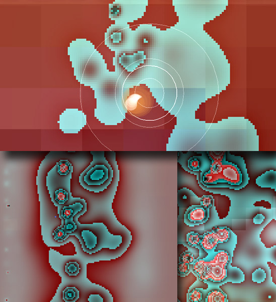
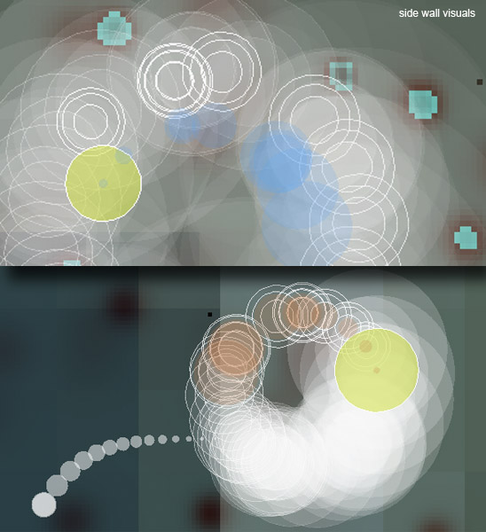

Media/Press
Links & Press:
Vimeo overview video
Make Magazine Announcement
San Diego Union-Tribune article (whoops, they spelled my last name wrong, should be Li not Lee)

Me demoing face warping visualization at Dorkbot SoCal (Event 37)
Photograph by Thomas Edwards.
Immersive Wall Projection Visuals
(See Installation Diagram)

Projection 1: (Face Distortion Video Feed)
Real time distortion of the participant's face via infrared camera, face detection and
motion detection.
The more intense the radiation, the more distorted and chaotic the video feed.
When radiation passes a threshold, the viewer's face is rendered with a skull image,
denoting potentially hazardous levels of radio frequency radiation exposure.
These visuals are projected on the front wall.

Projection 2: (On Floor)
Generative cellular automata simulation based on Conway's Game of Life that reacts
to
electromagnetic radiation. Rule sets change based on the magnitude of
EM fields, creating
different environments and cell behavior. This is projected
on the installation floor space to create an slowly changing ambient environment.

Projection 3: (On Side Wall)
Visuals of hertzian space disturbances and "hotspots" projected on the installation
side wall. Changes in electromagnetic field intensity are reflected through
the emergence of globular hotspots that quickly spread and influence the color
and shape of nearby zones, creating a constantly changing colorscape. Like
a radarscope, the visualization updates itself in a circular fashion with
new hotspots emerging around a spinning sweep indicator (a randomly color
changing "organism" comprised of a large ellipse with a trail of smaller ellipses).
The speed and direction of the sweep changes based on radiation levels to
reflect the dynamism of hertzian space.
When there is no detected radiation, the indicator moves slowly in anticlockwise fashion.
When the indicator starts to move clockwise it means that a burst of radiation
has been detected. At this moment and from the position of the indicator, there
is also an explosion of expanding transparent ellipses and a string of ellipses moving on a curved
path. If there is constant radiation, the clockwise rotating indicator will
continue to produces these explosive elements. As radiation levels increase,
the sweep indicator will rotate faster, making the explosion of expanding
ellipses appear further away from the indicator and towards the edge of the
2D colorscape. The overall effect is a more agitated and dynamic visualization
of an active space.
